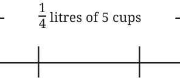
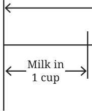

Example 3: Leena made 5 cups of tea. She used \(\frac{1}{4}\) litre of milk for this. How much milk is there in each cup of tea?


Leena used \(\frac{1}{4}\) litres of milk in 5 cups of tea. So, in 1 cup of tea the volume of milk should be:
\(\frac{1}{4} \div 5\).
Writing this as multiplication, we have:
\(5 \times\) (milk per cup) \(= \frac{1}{4}\) . We perform the division as follows as per Brahmagupta’s method: The reciprocal of 5 (the divisor) is \(\frac{1}{5}\) . Multiplying this reciprocal by the dividend ( \(\frac{1}{4}\) ), we get
\(\frac{1}{5} \times 14 = 120\).
So, each cup of tea has \(\frac{1}{20}\) litre of milk. Example 4: Some of the oldest examples of working with non-unit fractions occur in humanity’s oldest geometry texts, the Śhulbasūtra. Here is an example from Baudhāyana’s Śhulbasūtra (c. 800 BCE). Cover an area of \(7 \frac{1}{2}\) square units with square bricks each of whose sides is \(\frac{1}{5}\) units.
How many such square bricks are needed?
Each square brick has an area of \(\frac{1}{5} \times 15 = 125\) square units. The total area to be covered is \(7 \frac{1}{2}\) sq. units \(= 152\) sq. units. As (Number of bricks) \(\times\) (Area of a brick) = Total Area,
Number of bricks \(= \frac{15}{2} \div 125\). The reciprocal of the divisor is 25. Multiplying the reciprocal by the dividend, we get
\(25 \times \frac{15}{2} = 25 \times 152 = \frac{375}{2}\) .
Example 5: This problem was posed by Chaturveda Pṛithūdakasvāmī (c. 860 CE) in his commentary on Brahmagupta’s book Brāhmasphuṭasiddhānta. Four fountains fill a cistern. The first fountain can fill the cistern in a day. The second can fill it in half a day. The third can fill it in a quarter of a day. The fourth can fill the cistern in one fifth of a day. If they all flow together, in how much time will they fill the cistern? Let us solve this problem step by step. In a day, the number of times -
- •the first fountain will fill the cistern is \(1 \div 1 = 1\)
- •the second fountain will fill the cistern is \(1 \div \frac{1}{2} =\) _____
- •the third fountain will fill the cistern is \(1 \div \frac{1}{4} =\) _____
- •the fourth fountain will fill the cistern is \(1 \div \frac{1}{5} =\) _____
The number of times the four fountains together will fill the cistern
in a day is ___ + ____ + ___ + ____ \(= 12\).
Thus, the total time needed by the four fountains to fill the cistern together is \(\frac{1}{12}\) days.